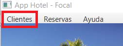

Base de datos
AppHotel–Focal funciona con una base de datos gestionada con el sistema HSQLDB. La estructura de dicha base de datos es invisible al usuario, pudiendo consultar el listado de clientes a través de su propio menú.

Posibles errores:
Error al conectar con la base de datos:
La base de datos no está integrada en la propia aplicación, en caso de que no se conecte, siga los siguientes pasos:
1) Conecte el servicio HSQLDB.
2) Establezca la conexión con utilizando la url “org:hsqldb:hsql://localhost/BDHotel”.
Información de interés: